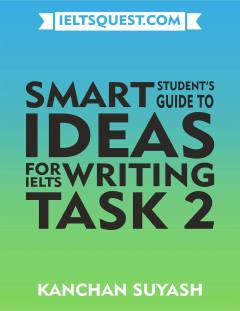

SSIELTS Writing Task 2 imtihoni uchun foydali g'oyalar va yozish ko'nikmalari qo'llanmasi.
Ushbu qo'llanma IELTS Writing Task 2 imtihoni uchun turli mavzularda g'oyalar va fikrlar topishda yordam beradi. Kitobda ta'lim, atrof-muhit, texnologiya va jamiyat kabi dolzarb mavzular bo'yicha foydali maslahatlar jamlangan. Talabalarga yuqori ball olish uchun kerakli yondashuvlar tushuntirilgan.